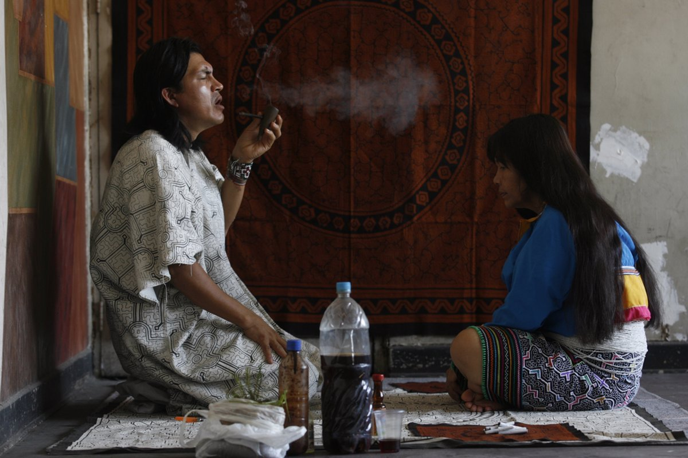
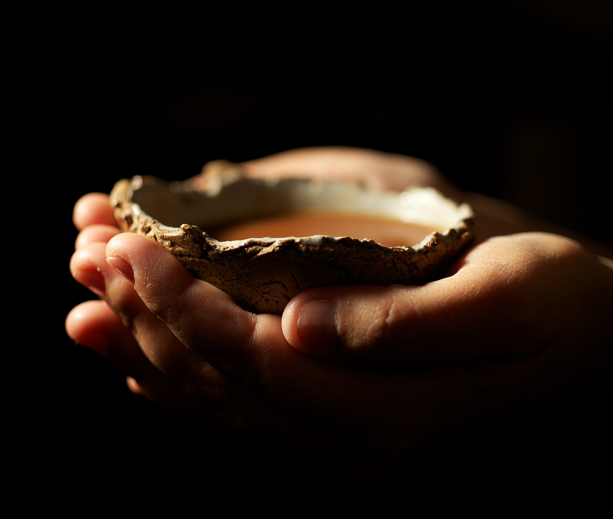

Detente, medita, respira profundo y siente la conexión con todo lo creado, no es casualidad que esta oportunidad se haya presentado ante ti. Ese problema que no te deja disfrutar de todo lo que vives y quieres lograr se puede arreglar, llegaste al lugar indicado.
Servicios
That is the important part, right? You want to know what I can do for you. This is why I put this right up there into the header menu of the website.
Ceremonias de Ayahuasca
Atrévete a vivir esta maravillosa experiencia que te ayudará a sanar y liberar emociones, elevar tu sistema inmunológico, conectar con tu espiritualidad y alinear tu campos energéticos.
Tenemos encuentros y retiros en CDMX, Cancun, Chiapas, Queretaro, Estado de Mexico, Morelos y mas.
Conocerte es la forma de magia más apasionante.
Terapia Personalizada con Enteógenos
Si tienes problemas que una ceremonia no puede abordar, te incomodan los grupos numerosos o tomas medicamentos que no te permiten usar la ayahuasca, eso tambien tiene solución.

La ayahuasca es una de muchas sustancias que te permiten conectar con tu interior, pero la quimica y la mente de cada cuerpo es diferente, en nuestro equipo contamos con quimicos y terapeutas con mas de 10 años de experiencia que te guiaran y ofreceran lo mejor para tu sanación.

Tratamientos para adicciones, depresión, ansiedad y mas, guiados por Psicologos especialistas.
¿Quieres saber mas sobre nuestros servicios?
Quienes Somos
Somos un Equipo encabezado por la Quimica y Etnobotánica Laura Schultz egresada de la Universidad Autonoma del Peru, se formo como Guia y facilitadora con los pueblos que originaron la preparación que conocemos hoy en dia como Ayahuasca.
Acompañada por el Psicologo especializado en prevención de Adicciones Aram Guerra, egresado de la UNAM colaborador en diversos estudios sobre el uso Terapeutico del DMT y LSD en el tratamiento de la depresión.